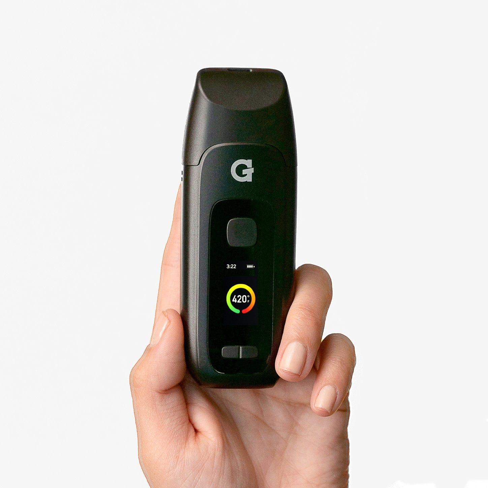
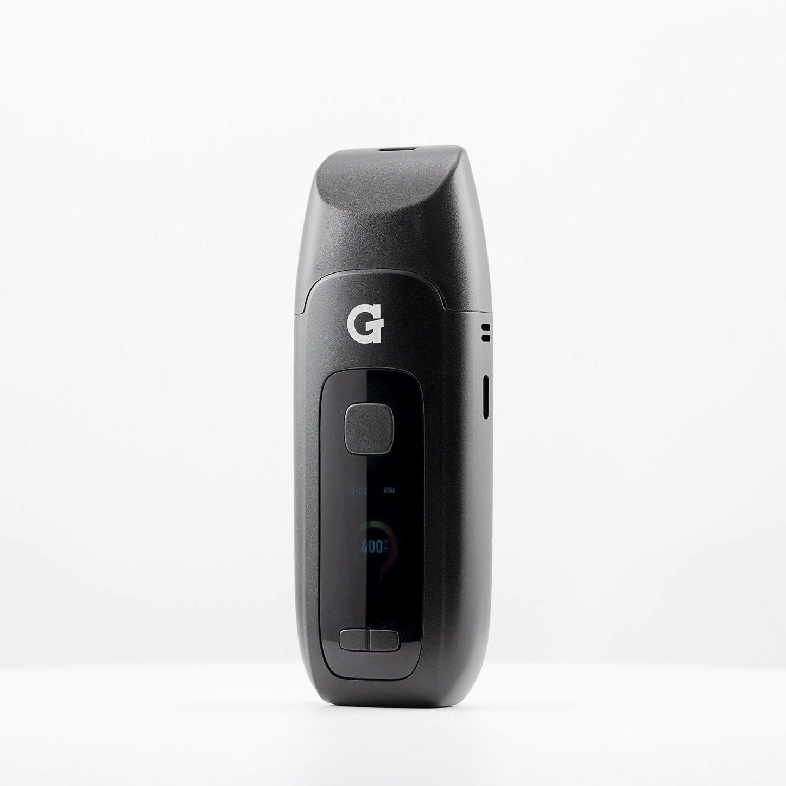
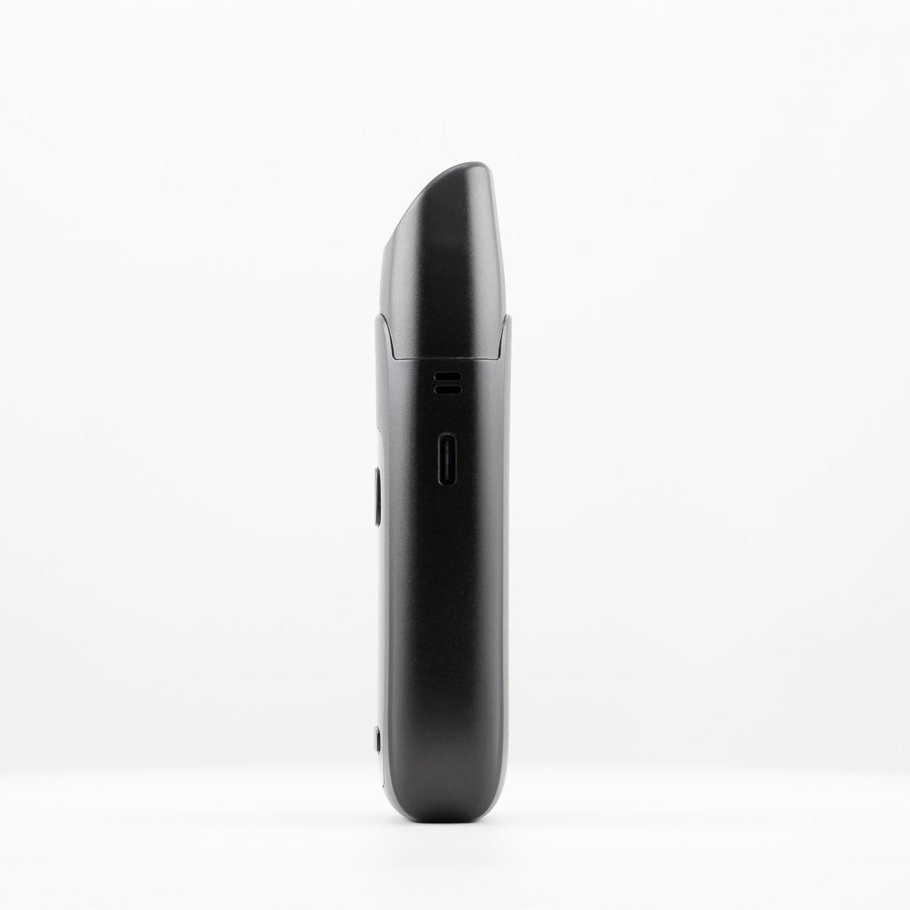

Using your
Dash+
Register your product-

1Charge
- Plug any USB-C cable into the charging port on the bottom.
- Give it a full charge before first use — takes about 1 hour.
- The LED blinks 8 times when the battery is low.
-

2Load
- Remove the mouthpiece by pulling it straight up.
- Fill the titanium chamber with ground dry herb — don't pack it tight.
- Replace the mouthpiece before powering on.
~0.3g capacity. A fine, even grind gives the best vapor and airflow through the spiral ceramic airpath.
-

3Activate
- Hold the power button for 3 seconds to turn on. The display lights up.
- Press Left / Right to adjust your target temperature.
- Double-click to start a session. The device vibrates when it reaches temp (~20 sec).
- The session auto-ends when the countdown hits 0:00. Device goes to standby.
HoldPower on / off Hold the power button for 3 seconds◀▶Adjust temperature Right = increase · Left = decrease2×Start / cancel session Double-click the power button5×Settings menu Session timer · Temp unit · Brightness · Haptics -
4
Draw
- Once the device vibrates, wait 30 seconds for your material to bake, then draw slowly and steadily through the mouthpiece.
- The spiral ceramic airpath cools vapor before it reaches you.
- Device powers off automatically after 1 minute of no activity.
After your session: Let the device cool, then remove the mouthpiece and brush out the chamber. Regular cleaning keeps flavor and airflow at their best.
Videos
Upgrades
Accessories & replacement parts for your Dash+.


Specs
View Product Details
| Type | Dry Herb Vaporizer |
|---|---|
| Chamber | ~0.3g titanium |
| Airpath | Spiral ceramic (hybrid conduction + convection) |
| Heat-up time | ~20 seconds |
| Battery | 1,800 mAh |
| Charging | USB-C, ~40 min per charge |
| Auto shut-off | 1 minute of inactivity |
| Dimensions | 4.3" × 1.6" × 0.8" |
| Weight | 276 g |
| SKU | GPD-001-AMZZ |
| UPC | 811736027489 |
| Warranty | 2-year limited (3 years with registration) |
Help
Common questions
Device won't turn on
Hold the power button for a full 3 seconds. If nothing happens, charge the device — the battery may be depleted. The LED display lights up when it's on.
How do I know it's ready to use?
After you double-click to start a session, the device vibrates once when it reaches your set temperature. The session countdown then begins on the display.
Vapor is thin or tastes off
Try a finer grind and make sure the chamber isn't overpacked. Clean the mouthpiece and airpath regularly — residue buildup is the most common cause of reduced vapor and off flavor.
What do the error codes mean?
If the display shows an error, power the device off and back on. If the error persists after charging and restarting, contact G Pen support for a warranty assessment.
What does the warranty cover?
The Dash+ includes a 2-year limited warranty covering electronics and manufacturing defects. Register your device at gpen.com to extend it to 3 years. Physical damage is not covered.